HAM Vention 1975-1976年
|
◎ ハムフェアの歴史 ハム・フェアの前身「第1回全日本ハムベンション」が1975年(昭和50年)、静岡県富士宮市で開催された。 会場は富士の裾野に広がる朝霧高原のグリンパーク。 1976年の第2回では特別記念局の8J2HAMも開局、交通の便は良くないものの自然を満喫出来る会場は多くの来場者で賑わった。 この実績を基礎に、1977年(昭和52年)「全日本ハムベンション」を引き継ぐ形で「第1回アマチュア無線フェスティバル」(ハムフェア)が、 JARLの主催で東京都中央区晴海の東京貿易センターで開催される事になった。 第1回は9月23日から25日までの開催期間にも関わらず、初日から多くの入場者がつめかけた。 フェスティバルの特別記念局・8J1HAMも開設、多くの来場者が運用した。
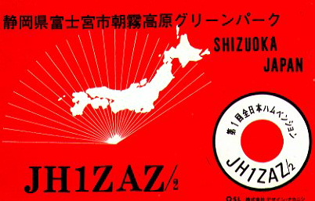 《第1回大会の記念局は臨時にJH1ZAZ/2が使われた 》
◎ 常陸宮殿下、同妃殿下がお揃いで 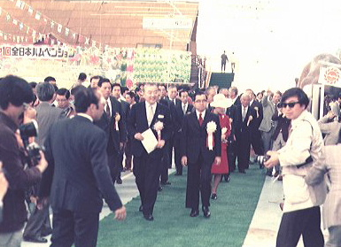 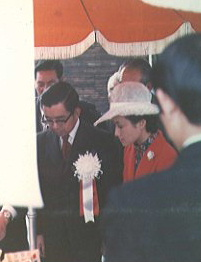 《 原大会会長の先導で会場をご覧になる常陸宮殿下、同妃殿下 》
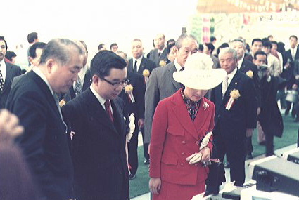 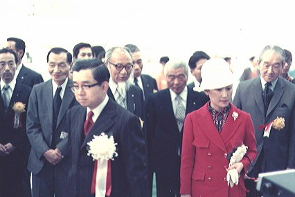 《 写真(左)トリオのブースで新製品の無線機をご覧になる両殿下 》
《 右の写真は、左側から田路嘉秀副会長(JA3XZW）森本氏(JA1NET）常陸宮殿下
1976年・第2回HAM Vention in 朝霧高原
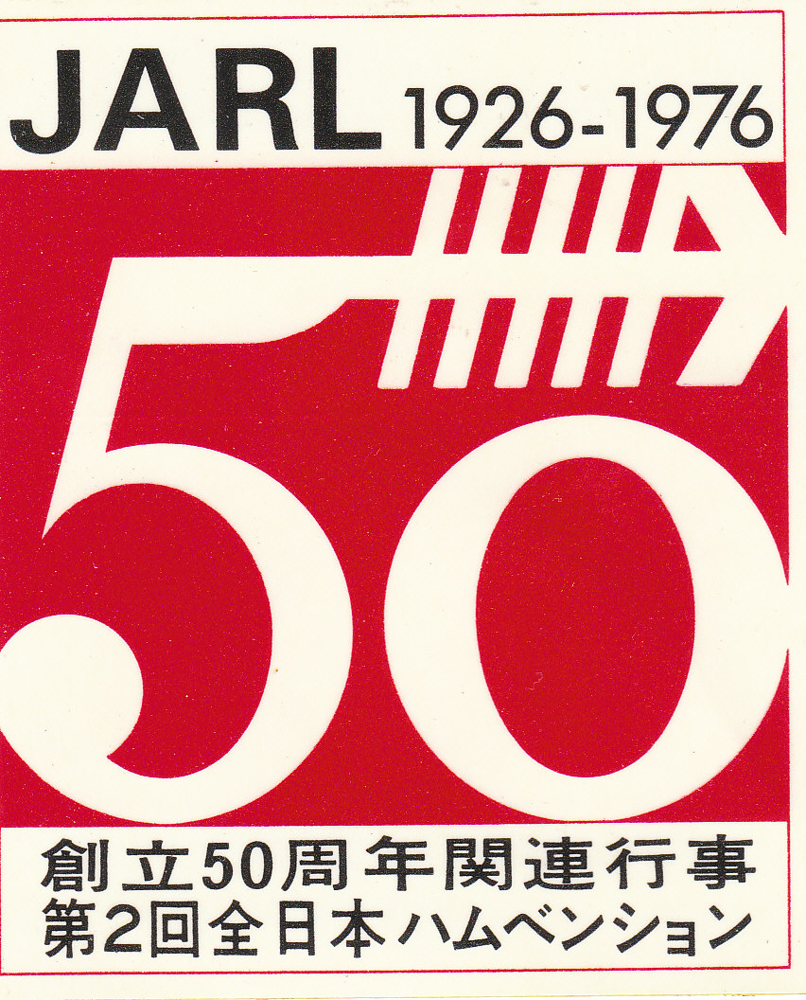
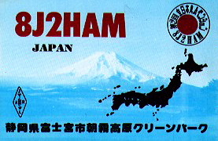 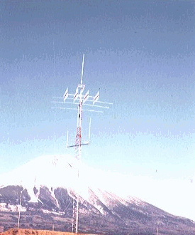 《 富士山をバックに8J2HAM運用...駐車場に建てられた記念局のアンテナ 》
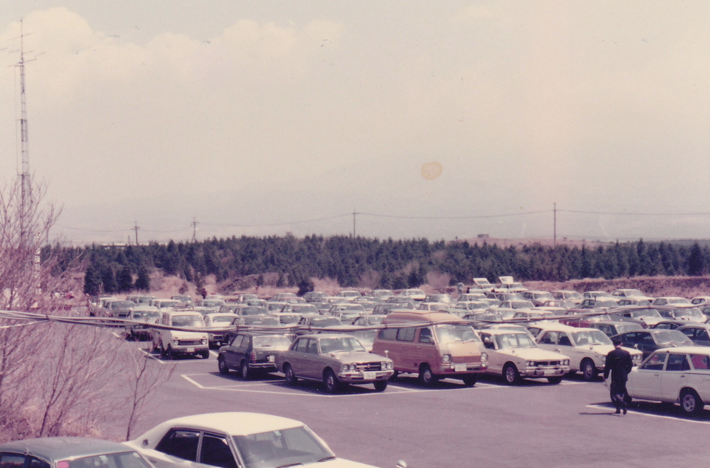 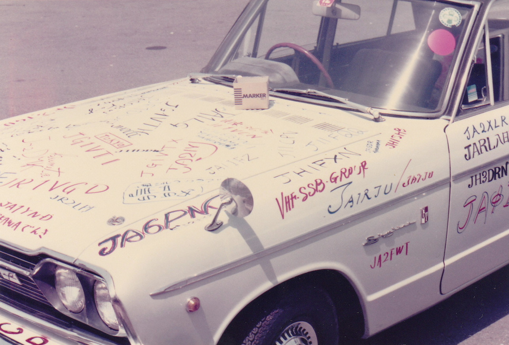 《 広い駐車場も早朝から一杯に/車のボディーに書かれた来場者のコールサイン 》
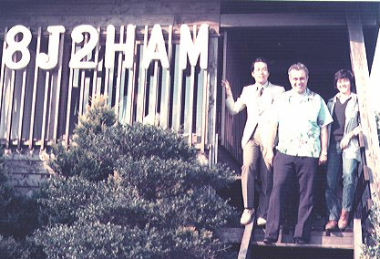 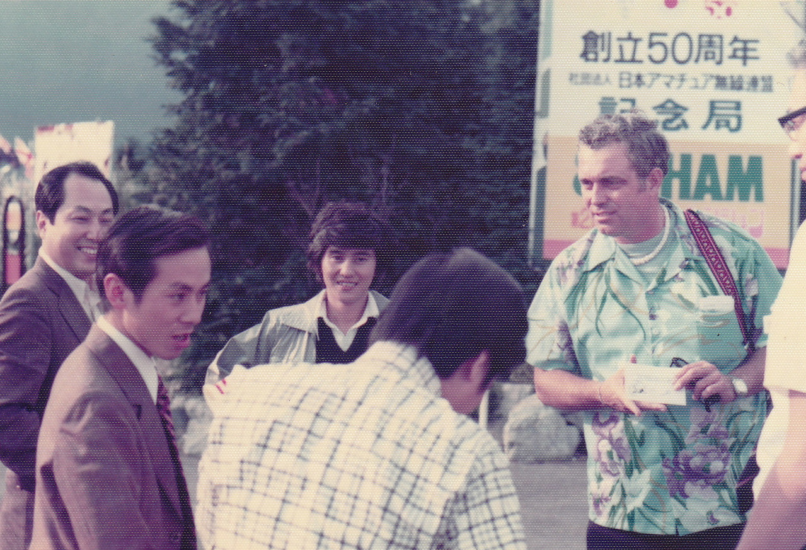 《 8J2HAMの記念局を運用。左からJA1RJU、KH6BZF、JA1LZK 》 《 KH6BZFを囲んで...向こう側左から=JA1AUH、JA1LZK、KH6BZF 》 《 模擬衛星の実験局も行われた写真は中継器の模型 》
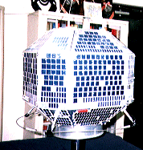 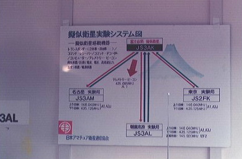 《 右は模擬衛星の交信概念図 》 |
 Ham Fair 2007(Ariake)
Ham Fair 2006(Ariake)
Ham Fair 2005(Ariake)
Ham Fair 2004(Ariake)
Ham Fair 2003(Ariake)
Ham Fair 2002(Ariake)
Ham Fair 2001(Yokohama)
Ham Fair 2000(Yokohama)
Ham Fair 1999(Yokohama)
Ham Fair 2007(Ariake)
Ham Fair 2006(Ariake)
Ham Fair 2005(Ariake)
Ham Fair 2004(Ariake)
Ham Fair 2003(Ariake)
Ham Fair 2002(Ariake)
Ham Fair 2001(Yokohama)
Ham Fair 2000(Yokohama)
Ham Fair 1999(Yokohama)